英文
英文威廉斯等
编者按
当电化学家马丁·弗莱施曼和斯坦利·庞斯宣称他们在小瓶的电解含盐重水中发现了“冷”核聚变的证据时，世界各地很快出现了一些证实其成功或失败的相矛盾的报告。这篇来自英国化学家戴维·威廉斯和他的合作者的文章是首篇将流行观点转向认为冷核聚变只是错觉的文章之一。文章报告了对弗莱施曼和庞斯实验结果的一次非常全面的重复尝试，结果发现没有“过热”、中子发射或者氚生成的证据，而后两者被认为是氘发生聚变的判据。 英文
使用三种不同设计的量热计、高效率的中子和γ射线探测装置对多种材料进行研究的实验未能支持最近弗莱施曼等人[1]和琼斯等人[2]关于冷核聚变的声明。可能是一些未探测到的虚假效应导致了这一关于冷核聚变的断言，其中包括中子计数器的噪声、宇宙射线本底的变化、简易量热计的标定误差和可变的氚的电解富集。 英文
最近发表的论文[1,2]报道了室温下电化学引发的核聚变，该结果引起了极大的关注。报道中发生核聚变的鲜明特征是配有钯阴极的电解池中过剩的热量输出、中子（即n）发射和氚（即t）的产生[1]，以及配有钛阴极的电解池中仅有很低水平的中子发射[2]。传统核物理预测轻核之间的聚变需要非常高的温度（如在托卡马克装置中那样）或者两个核异常接近（如在μ子催化核聚变中那样）。根据氘（即d）分子的核间距（0.74 Å）计算出的核聚变速率约为3×10–64 s–1（参考文献3），所以在已知间隙位间距（约为3 Å）的情况下，很难理解参考文献2报道的反应速率（每对氘核每秒约产生10–23次聚变效应），如果考虑到氘在钛中并未完全充满（参见材料表征部分），这一速率（约为3×10–64 s–1）还是被大大低估了，参考文献2中的速率就更不易理解了。而参考文献1中报道的反应速率甚至更难理解[4]，尽管有强大的反对意见（如参考文献5），他们还是假定存在一种未知的机理，可以使反应速率异常增加，并抑制正常的核反应通道。 英文
第一批电解冷核聚变效应的报道指出，该效应并非自始至终都是可重复的，它耗时少许才出现并可能随后消失。因为电化学现象对表面状态非常敏感，一些不可重复性本身并不令人惊奇，最近其他的报道（如参考文献6~8）在观察所谓的冷核聚变效应时给出了失败和成功的完备记录（哈金斯和阿普尔比，冷核聚变专题讨论会，圣菲，1989年5月）。重复性的明显缺乏使得效果显著的重复实验变得很有必要，要想使结果具有较高的置信水平，对照实验至少在数目上应该与之前的实验相当，同时要探究许多不同的、特性明确的材料和电解液组合。尤其是钯电极和钛电极电解法充氘的时间尺度、可达到的浓度，氢“杂质”的量化，以及在用过的阴极上通过表面分析可以检测到的各种物质都应该测定。 英文
量热法
我们使用了三种量热计。首先，我们构建了与弗莱施曼等人所用的（参考文献1；弗莱施曼，个人交流）尺寸和设计相似的量热计（图1）。我们发现这种量热计是不精准的装置，具有一些不太容易被发现的误差来源，很有必要对其进行仔细研究和分析。我们使用了16个这样的电解池，包括不同尺寸的阴极（1 mm、2 mm、4 mm和6 mm的钯棒）和不同的电解液（0.1 M LiOD，0.1 M LiOH，0.1 M NaOD或者0.1 M NaOH）。图2a和2b显示了其中一个典型的电解池获得的结果。一个直接的明显特征是具有锯齿状形式的倾斜基线，这是电解池定期地添加电解液的结果。基线的斜率可以通过仪器常数k随电解池中液面水平的变化定量地求出。这是由杜瓦瓶内的真空夹层的热辐射损失[9]和电解池玻璃内壁的热传导[10]产生的结果（见图2的图注）。基线倾斜的结果就是任何标定只有针对特定的液面水平才是有效的。我们定期将这些电解池重新灌注到进行标定时的参考水平。在电解开始前，我们用加热器对电解池进行标定，电解期间，运行了相当一段时间后再标定一次，如图2a所示（标定过程的细节见图1的图注）。两种标定设置没有统计学上的显著差异，所以我们将所有的数据都结合起来了。 英文
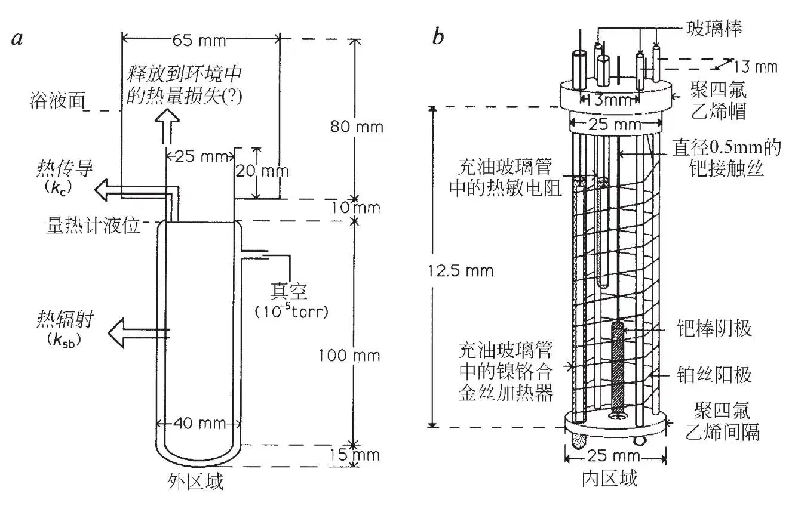
图1．本文使用的FPH型热流量热计示意图。在图中标出了热流的路径，更进一步的讨论如图2的图注所示。
方法：除了弗莱施曼、庞斯和霍金斯（FPH）型的量热计之外，我们还使用了[10]两种其他类型的量热计——改进的热流量热计（IHF）和等温式量热计。IHF量热计与FPH量热计的不同主要表现在三个方面。首先，IHF量热计更大：500 ml容积的柱状容器构成了电解池，其中阳极–阴极间距约为2 cm。其次，电解容器被塞进一个紧密贴合的铝罐中，用一层油膜保证热接触，铝罐被隔热材料包裹起来并放入一个杜瓦瓶中。FPH量热计中电解池的温度是通过浸入电解池内的、由玻璃保护的热敏电阻进行测量的，而在IHF结构中，测量的是铝罐的温度：对于将电解池中的热量传导出去的过程而言，罐体可以被认为是一个恒温的表面，将它作为温度测量表面解决了FPH结构中基线倾斜的问题。第三，将杜瓦瓶中电解容器上方的空间用一个高高地伸出到杜瓦瓶上方的聚苯乙烯盖子填满，这样做的目的是显著减小未知的释放到大气中的热量损失。两种类型的热流量热计都在水浴中运行，水浴控制在恒定的温度20 ℃(±0.08 ℃)。水浴的顶部用一个聚苯乙烯的盖子盖住。在两种量热计中，电解池均包括一个弯成螺旋形的铂丝阳极（0.25 mm）和一个中央的钯阴极（庄信万丰公司）。对FPH电解池我们制备了不同的电解液，它们由电导水（H2O电解池）或者初始同位素纯度大于99.9%轻微氚化了的D2O（比活性为13 kBq·ml–1）制成。我们用0.1 M LiOD（D2O购自奥德里奇公司，测得初始同位素纯度大于99.9%）作为IHF量热计中的电解液。在IHF电解池中，铂和钯的接触丝被封装在玻璃管中，以避免电解产物任何可能的催化复合过程。在后面使用FPH电解池的实验中我们也使用了屏蔽的电极接触丝，但是这对获得的结果没有任何影响。IHF电解池包含一根用绝缘套管覆盖到顶端的钯丝电极，它被放置于距电解池底端四分之三处。这是在向电解池添加或者重复添加液体时用来规定内部液面水平的参照。IHF电解池中更大的电解液体积（300 ml）意味着重复添加仅需要偶尔进行，但是较大的热质则意味着响应会比较慢（时间常数约为12小时）：因此他们对热量的少量释放并不敏感。我们用置于填满油的玻璃管中的镍铬合金丝加热器对热流量热计进行了标定，该玻璃管与电解池的内容物相接触。标定的过程包括运行加热器，不施加电解电流或者施加显著小于（0.2~0.4倍）通常电解所需的电流，直到体系获得一个稳态的温度。对于FPH电解池，使用较小的电解电流旨在确保持续搅拌的同时减小由于基线漂移带来的误差；在每次单独的标定之前电解池都要再添加一次电解液。利用方程P = a–b(logR) + c(logR)2将得到的热敏电阻的阻值R在应用的功率P的范围内对P进行拟合，其中a，b和c是拟合参数，这样一条经验的标定曲线就得到了。对拟合曲线估算出的FPH电解池的标准误差在10 mW到高达70 mW之间变化，这主要反映了外推到参考水平时的误差。中子计数使用了安装在电解池上方、水浴盖顶部[10]的两个独立的计数管组合体，是与FPH电解池的运行同时进行的。高于本底的探测灵敏度在电解池中为每秒3个计数。我们没有观察到任何高于本底的信号。等温式量热计（梅森、怀尔德、维克里、胡顿和韦尔斯，第29届核材料管理协会年度会议录，拉斯维加斯，内华达州，1988年6月）包括三个同轴的铝筒，相互之间用一种较低热导率的导热介质隔开。圆筒的温度通过螺旋缠绕在各圆筒上的电加热器来维持。温度通过每个圆筒上的电阻式温度计来控制，该温度计与经典控制软件和圆筒加热器连接在一起。测量室（直径12.5 cm，高26 cm）中的热能产生速率可以通过精确测量供给测量室的电能来确定。我们在测量室温度为42±0.001℃的条件下运行量热计。运行功率为20 W时，测量室的功率分辨率小于5mW。电解池中含有约1 L 0.1 M的LiOD。阴极置于一个打孔的盖状玻璃中，以阻止产生的气体在测量室中混合。阳极是一个绕着阴极的高3 cm、直径12 cm的铂箔圆筒。电解池与量热计的测量室通过导热油进行热耦合。使用铂阴极以及镍铬铁合金丝加热器测量，测量结果显示量热计中存在一个小的系统误差，表观的功率过剩随输入功率呈线性变化，输入功率为15 W时，功率过剩高达100 mW。将这些测量值（12个点，估计值的标准误差为8.8 mW）的线性拟合用于对钯阴极所测表观过剩的校正。再对等温式和IHF电解池所测的输出功率进行功率损失校正，功率损失是由于电解液的挥发造成的，假设当电解气体流出电解池（42℃时为25.0 mW·A–1）时电解气体在水蒸气中已达到饱和：qV = (pV/p0)(1.5)ΔHVI/(2F)，其中qV为功率损失，pV代表饱和蒸气压，ΔHV为电解液挥发的相变潜热，p0为大气压，F为法拉第常数，I为电流（假设为理想气体）。 英文
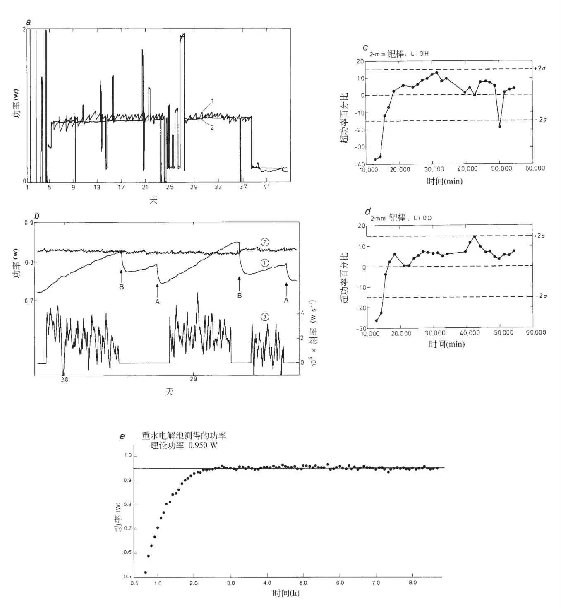
图2．a，从LiOH电解液中带有一个4 mm钯棒（1.5 cm长，庄信万丰公司的“光谱纯”样品，从熔融态得到）的FPH型量热计得到的原始数据。线1表示根据温度计读数计算出的输出功率，线2表示电解池的焦耳输入功率，Pin = I(V – V0)，其中V0 = ΔHd/2F（对于D2O为1.527 V，H2O为1.481 V，ΔHd为解离焓，例如，D2O(l)→D2(g) + 1/2O2(g)）。大的台阶式变化为标定值。b，a的一个放大区域，突出了倾斜的基线。线1和线2与a中相同。线3是使用七点赛威特斯基–高勒程序[23]对数据取微分计算出的表观输出功率的斜率，一步一个点。在点A，将预热到电解池温度的水添加到量热计的参考标记处。在点B，添加进根据电解速率估算的一定体积的液体。c和d，两个最为一致的FPH型量热计的结果——0.2 cm×3 cm的钯棒在（1）LiOD和（2）LiOH中——以表观输出功率超出焦耳输入功率的百分比形式表示。误差棒代表从所有不同的电解池中所得的结果计算出的控制极限±2σ（见正文）。e，使用等温式量热计（20 mm×2 mm直径的钯阴极）得到原始数据，应用输入功率后立即开始测量，曲线代表焦耳输入功率，点代表观察到的电解池功率。这个量热计的响应时间由电解池内容物取得热量混合的时间决定，尽管具有较大的溶液体积，它仍快于简单量热计的响应时间。
倾斜的基线“简易的”FPH型量热计的响应可以模型化为[10]
Pin = kΔT=（ksb+kc）ΔT
（3）
其中[9]
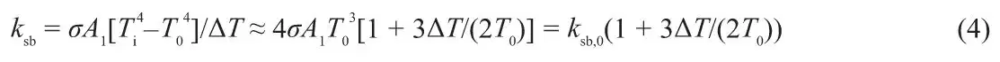
同时[10]
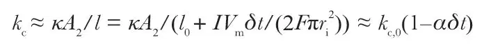
（其中Pin是焦耳输入功率，k是量热计常数，ksb和kc分别为通过杜瓦瓶内的真空夹层的辐射损失和沿玻璃内壁的传导对量热计常数的贡献，σ为斯特凡—波尔兹曼常数，A1为溶液与电解池壁的接触面积，T0为水浴温度，Ti为电解池的温度，ΔT = Ti – T0， 为玻璃的热导率，l为液体到玻璃内壁与水浴的接触点间的距离，它的初始值为l0，A2为玻璃内壁的横截面积，I为电解池电流（300 mA），Vm为电解池溶液的摩尔体积，δt是从添加电解液后算起的时间，ri为玻璃容器的内半径，
为玻璃的热导率，l为液体到玻璃内壁与水浴的接触点间的距离，它的初始值为l0，A2为玻璃内壁的横截面积，I为电解池电流（300 mA），Vm为电解池溶液的摩尔体积，δt是从添加电解液后算起的时间，ri为玻璃容器的内半径，
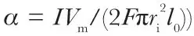
。我们测量的电解池的量热计常数约为0.1 W·K–1，是通过方程（4）计算的，这表明ksb和kc的贡献大致相当。要对量热计进行更完整的描述就必须考虑溶液损失对量热计热容的影响。然而，可以证明这对倾斜基线的影响是无足轻重的[10]。 英文
图2c显示了两个量热计的液面水平都在同一个标定面时的结果，以表观输出功率超过焦耳输入功率的百分比表示。实验开始时有一个明显的吸热反应阶段，这个阶段随阴极直径变大而延长。我们推测在阴极吸氢过程中搅拌不充分是原因之一，因为它在电解池中造成了一个温度梯度（电解开始时并无气体从阴极放出，为了保持表面积不变，直径较大的阴极更短一些）。电解开始时一个类似的效应由刘易斯等人[8]报道过，他们指出类似的电解池的表观传热系数在实验的初始阶段会变化。由于这个效应，我们在进行统计计算时排除了每个电解池开始运行的前10,000分钟的数据。表1a显示了每个电解池的平均绝对功率偏差值和这个值的标准偏差。所有H2O电解池的标准偏差同D2O电解池的没有明显差异（F检验，1%的水平），所以所有电解池的数据都可以用于估算误差：σ = 0.048 W（即±5%~10%）。对这个误差进行更加详细的分析[10]，揭示了它主要由重新灌注电解池后液面水平的变化决定，也有由量热计壁向水浴上方空气传导造成的热量损失这一未经量化的变化量的贡献。与这些误差相比，电解池内的温度梯度产生的影响很小。本文中使用的设计不同于参考文献1，我们用玻璃套筒来支撑量热计，而且玻璃套筒与内壁直接接触，由此玻璃套筒就可与水浴有较大面积的热接触，进而减小了室温变化的影响。 英文
表1. 量热法结果
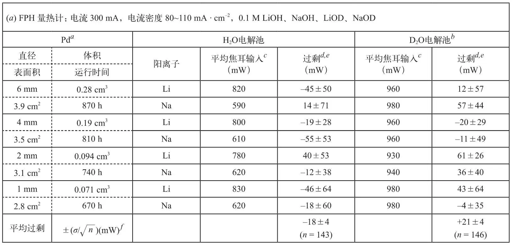
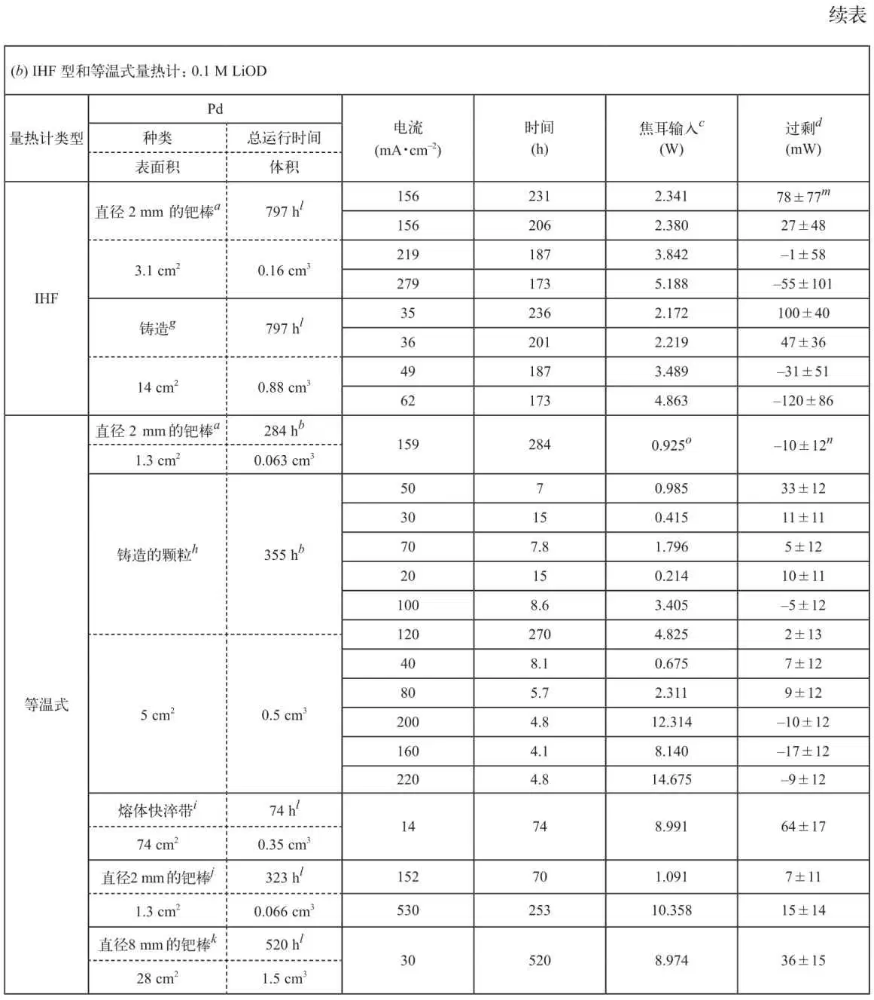
a 庄信万丰公司（JM）的“光谱纯”；由高纯粉末制备的烧结块料拉制而成。
b 购自哈韦尔公司的D2O，含13 kBq·ml–1的氚。
c 提供给电解池的平均焦耳功率（参见图2的图注）。IHF和等温式量热计的数值都就蒸发产生的热量损失进行了校正（参见图1的图注）。
d 过剩功率=测量的电解池输出功率–计算的焦耳输入功率。
e 在每一次将液面加至参考液面时算出的数值（平均值±1σ），排除了开始10,000分钟极化过程的数据（见正文）。
f 所有H2O和D2O数据点的平均值和平均值的标准偏差。
g 由JM提供的特制材料——从库存的铸造钯制备得到，使用一种重力铸造工艺通过氩弧将之熔化成棒状。棒随后被切成片，并弯曲以减少所需的吸附时间（从体相到表面的最大距离约1 mm）。样品用丙酮、 10%的盐酸和蒸馏水清洗。
h “光谱纯”的钯在一个水冷的铜炉床上，在氩气保护下用电弧熔融三次。
i 由铸造或者烧结的钯通过熔体快淬制备得到（JM）的各种快淬带。一部分带经过了在含氢10%的氮气下20分钟100 ℃的热处理。带的厚度为125 μm。
j a型随后在1,200 ℃下进行真空除气处理，在40巴的气压下吸附氘。转移到量热计之前样品被冷却至液氮的温度，以减少D2的流失。
k 烧结的高纯度钯棒被切成片并弯曲，以减小所需的吸附时间（表面到体相的最大距离为约1 mm）。
l 购自奥尔德里奇化学品公司的D2O，约含15 kBq·ml–1的氚。
m 所有数据点的平均值和标准偏差都在温度稳定后采集：每3分钟采集一个数据。
n 标准偏差由公式
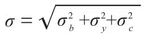
计算，其中σb为基线测量的标准偏差，σy为电解池运行时功率测量值的标准偏差，σc为根据校正曲线估算的标准误差（见图1的图注）。σb和σy的典型值为6 mW，σc为8.8 mW。 英文
正如我们所预期，H2O和D2O电解池给出的数据点都有少量处于±2σ的“控制界限”之外（图2c）。没有数据点是在±3σ之外的。所有电解池都没有两个或者更多的连续数据点处于±2σ之外，D2O电解池实验中超出控制界限的数据点的数目与H2O电解池实验并无不同。因此，我们得出结论，在实验误差范围内，D2O电解池的特性与H2O电解池相比没有明显的异常。然而，如果根据表1a，将所有8个D2O电解池（＋9.91%±0.47%或者0.021±0.004 W；平均焦耳输入0.96 W）与所有8个H2O电解池的平均功率偏差（–2.46%±0.72%或者–0.018±0.004 W，LiOH电解池的平均焦耳输入为0.81 W而NaOH电解池的为0.61 W）进行对比的话，其差别是十分明显的。因为没有一系列的独立数据点处于上述的控制界限之外，我们认为有另外一个未知的误差来源，与输入功率成比例。当然，这可以是假设的“核聚变效应”，但是这个效应的数量级与误差相同。检验这个假设的唯一可信赖的方法就是构建不受主要误差来源影响的量热计，尤其是不倾斜的基线。我们因此也使用了满足这一准则的等温式量热计和稳态（热流）量热计。 英文
我们也仔细分析了输出曲线的斜率[10]，以寻找时间尺度上短于校准点间隔的瞬时功率脉冲。如果焦耳输入保持恒定，则斜率应该不变。任何突然或瞬间额外功率qc的输入，都会将斜率改变大约(ksb + kc，0)qc/M0（M0为与量热计等效的水的量，其他符号沿用图2的图注中的定义）。H2O和D2O电解池中与平均斜率明显偏离的数目大体相同。就所有数据而言，D2O电解池（6 mm的棒）最大的功率偏移约为45 mW，而H2O电解池（6 mm的棒）约为40 mW。这些值与输入功率相比较小。很显然没有异常大的功率脉冲出现。鉴于控制量热计的难度，不能将非常偶然的小波动的出现视为是支持“核聚变”假说的证据。 英文
本研究中使用的另外两种量热计在图1的图注中进行了描述，结果列于表1b中。我们尝试了一系列不同的钯制备方法和最大值接近600 mA·cm–2的一系列电流密度。使用改进的热流量热计（IHF），功率过剩的符号和数量级随焦耳输入功率而变化，但总是小于5%。用钯阴极的体积表示，这个值的范围在100~500 mW·cm–3之间。最精确的量热计是等温式量热计（可探测的最小功率变化约为10 mW；可探测的任何最小猝发能量约为40 J）。我们分析这些以4小时为间隔的结果，每约20分钟将焦耳输入功率和测量的输出功率作平均。对分析区域每4分钟获得的数据进行的研究显示，没有任何短时热量“猝发”的明显迹象，而且我们发现在任何我们使用的条件下，测得的输出功率没有随着时间变化的趋势。表1b显示我们获得的热平衡优于20 mW（对钯而言为24~240 mW·cm–3）。在最初的钯电极充电期间以及高表面积阴极在大电流条件下运行的过程中，我们观察到了少量的热量过剩（30~60 mW）：可以合理地假设是少量的复合过程（至多4%）产生了此效应。 英文
中子计数
我们使用三种不同的检测系统研究了来自多种电解池的中子发射（表2）。我们用大而高效的探测器来进行大部分的中子测量，它是一个由56个10BF3正比计数器排布成的、由5个同心圆环阵列[11,12]所组成的装置。2.45 MeV的d–d中子总效率为44%。我们构造了一个自动电解池滑梭装置来定期调换两个形式上完全相同的电解池，只有其中一个是通电的。这使得本底（本底主要来自宇宙射线，没有布置反符合计数管）和任何信号可以实质上同时计数。操作时，电解池每隔5分钟调换一次，5个圆环上的数据分别被记录下来。从一次典型实验中得到的数据如图3所示，它们是通电和不通电的电解池的计数率之差。尽管在所展示的特例中，从探测器整体的计数率之差可以看到两个尖峰信号，但是这些尖峰信号显然完全是由于环4的错误响应引起的，因而是假象。 英文
表2. 所测的各冷核聚变电解池的中子和γ射线发射速率
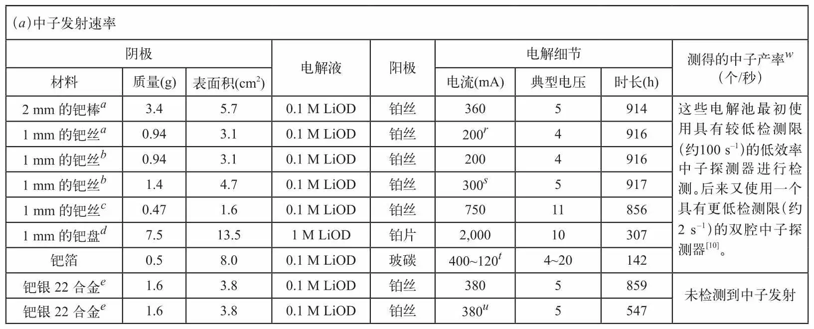
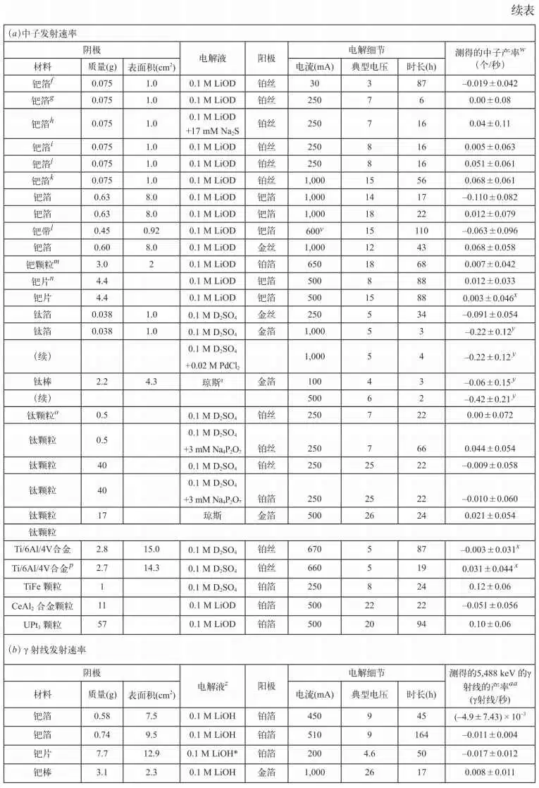
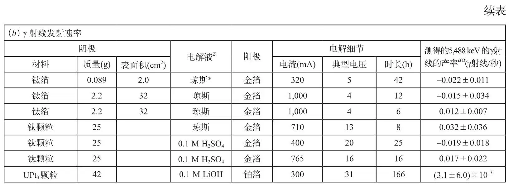
a 弗莱施曼提供的电解池。使用之后分析了阴极的氢和氘——结果H/Pd为0.01、0.02，D/Pd为0.84、0.72。
b 阴极绕成一个紧密的螺旋状。初始阶段在大型中子检测器中进行监测，没有滑梭，持续了147小时，估算的检测限为1 n·s–1，之后的5小时检测限为0.2 n·s–1。再次使用之前阴极的表面用硫擦过。
c 300小时后用砂纸清洁阴极。
d 初始阶段阴极在大的中子检测器中进行监测，没有滑梭，在0.1M LiOD中进行了183小时；估算的检测限为1 n·s–1。使用之前用400目的金刚砂纸打磨。
e 管材来自托卡马克装置中的氘存储系统。
f 使用后分析了阴极中的氢和氘——结果：H/Pd为0.03, D/Pd为0.80。
g 上面实验中的电解液重复使用。
h 上面实验中的电解液和阴极重复使用；Na2S以高浓度水溶液的形式加入。
i 使用前在1,000 ℃真空下对箔进行了除气。使用后分析了氢和氘——结果：H/Pd为0.02，D/Pd为0.83。
j 使用之前将箔浸入Na2S（浓溶液）中。使用后分析了氢和氘——结果：H/Pd为0.05，D/Pd为0.80。
k 将阴极切掉一半，使用后分析了氢和氘——结果：H/Pd为0.02、0.02，D/Pd为0.85、0.78。
l 熔体快淬带，由庄信万丰工程中心提供。
m 电弧熔化两次；在0.1 M LiOD溶液中电化学充氘一个月，然后在液氮中冷冻，浸入浓的Na2S溶液并转移到中子计数电解池。
n 包括点焊在钯丝上的四个厚度为1~2mm、不同型号的圆形钯片（庄信万丰公司）以及受到应力的钯丝。
o 之前实验的电解液重复使用，使用钛阴极和铂阳极。
p 使用之前将材料加热到900 ℃然后在水中淬火。
q 将琼斯使用的电解液中的AuCN用NaAuCl4替代。
r 电流开启36小时，然后每小时在200 mA和20 mA之间变换一次。
s 电流开启36小时，然后每5分钟在300 mA和30 mA之间变换一次。
t 由于电解期间阳极的分解，电流在所示范围内缓慢变化。
u 电流开启36小时，然后关闭10小时、开启2小时并循环这一过程270小时。然后余下的时间中5,000秒为380 mA的阴极电流，4,000秒为10 mA的阳极电流。
v 电流每2小时开启或者关闭，依次循环。中子产率指的是“开启”期间的。
w 给定的误差（1σ，由整个实验期间计算而来）多少会有些变化，因为为了涵盖尽可能多的电解池的设置（主要是在规划的早期阶段），并不总是能够成对地开展未通电＋未通电和通电＋未通电的实验，从而使得整个宇宙射线中子的探测效率存在少许差异，这是由于两个形式上相同的电解池存在少许差异造成的。
x 采集这些数据时使用了一个不同的数据采集系统驱动滑梭和累计数据，旨在探寻猝发中子[10]。
y 电解池每过5分钟进行手动交换。
z 进行γ射线研究的所有电解液中H2O∶D2O都为50∶50，标*的H2O∶D2O为41∶59。
aa 当前测量中，用一系列标准的γ射线源和一个放射出6,129 keVγ射线的238Pu/13C（α，nγ）源对系统进行了校准。放置各个电解池时它们的阴极应尽可能地靠近探测晶体，探测效率通过将之前测量[21]的点效率函数对阴极体积进行积分计算出来。在预期的全能峰、单逃逸峰和双逃逸峰的位置（5,488 keV、 4,977 keV和4,466 keV）处寻找峰，这些位置是用参考文献22中推荐的方法预测的。 英文
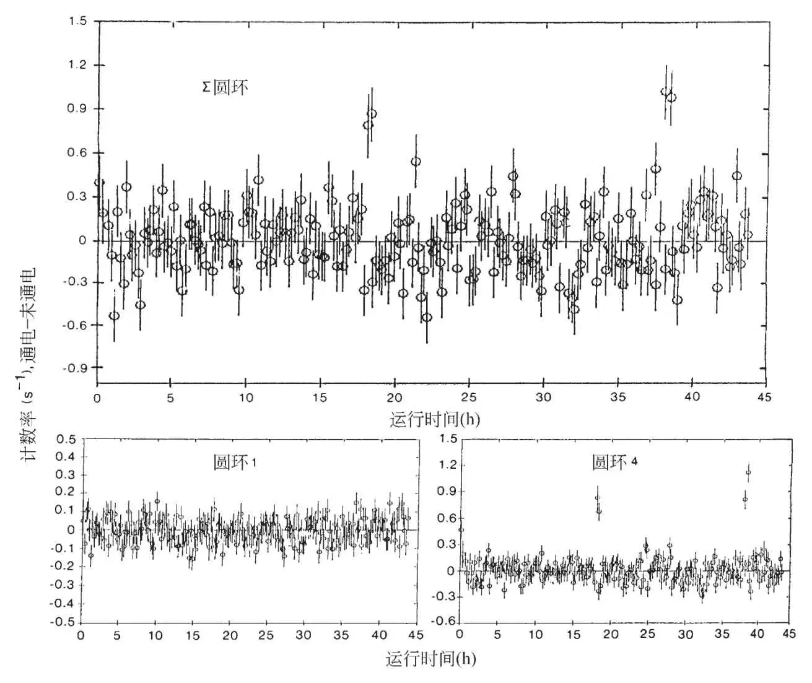
图3．从大型高效率中子探测器的一次典型实验中获取的数据。它们展示了通电和未通电的电解池计数率的差异，这是通过持续地变换滑梭位置实现的，具有0.1 M D2SO4的电解池中含有40 g钛颗粒。显示的误差为每5分钟计数区间的1σ误差。除了将探测器作为一个整体得到的结果之外，还显示了五个圆环中的两个获得的结果，组成圆环的10BF3正比计数器直径为2 in，活性长度为107 cm。圆环2、3和5（未显示）的计数与圆环1的非常相似。只在圆环4中观察到了明显的猝发，因此这是一个假信号。一只管（内直径90 mm）穿过探测器的中心，屏蔽设备包括6 in的硼酸树脂、1 mm的镉和2 in的铅。中子探测效率比较高，并且与中子能量无关，在0.5 MeV中子（Am/Li）的48%到4.2 MeV中子（Am/Be）的40%之间变化。本底计数率为每秒4~5个计数，大部分中子来自宇宙射线。五个圆环计数器中的每一个都有自己独立的前置放大器、脉冲形状放大器和甄别器，计数的中子的平均能量通过最外侧的环形计数器（环5）的计数与最内侧的（环1）计数之比得到。因为中子计数分布于五个环上，也因为平均捕获时间为135微秒，从一个源中同时猝发的多个中子可以被分别计数（例如，就像252Cf源一样）。前置放大器、高压部件和绝缘体都被囊括在一个干燥的电屏蔽箱中，我们消除了运行于PDP-11/45型数据采集计算机上同轴电缆的接地回路和诱发的电磁捕获（“天线”）效应，这是通过使用隔离的高频脉冲转换器并将同轴电缆在铁氧体环上缠绕多次实现的。中子探测器和与之相连的电子器件被置于一个控温的空调房中，这个空调房有两英尺厚的混凝土墙壁和屋顶。 英文
电解池细节和测量结果列在表2中。如果在整个运行过程中中子持续发射，则从表2中推导出钯的中子发射的最低限（2σ）为1.5×10–2 n·s–1·g–1或1.5×10–2 n·s–1·cm–2。就钛而言，这个数值为3×10–3 n·s–1·g–1或4×10–3 n·s–1·cm–2，然而后面的限值太高了，因为它并不适用于所用颗粒表面积大而不确定的实验。如果我们假设发射至多持续了一个小时的时间，那么限值为，钯：7×10–2 n·s–1·g–1或4×10–2 n·s–1·cm–2，钛：8×10–3 n·s–1·g–1或2×10–2 n·s–1·cm–2（比用小颗粒的实验小得多）。中子发射速率限值比参考文献1报告的约104 s–1低数个数量级，比参考文献2报告的约0.4 s–1低一个数量级。值得注意的是，我们研究的限值也可以在那些冷核聚变可能会增强的电解池中得到，尤其是使用钛阴极，以大质量（40 g）的多孔颗粒来提高反应体积和表面积，而且特意选择能够促使氘吸附到阴极的电解液[13]（见图3）。正如后面讨论的，我们没有展示氘在金属晶格中数目的结果。 英文
由于表2给出的纯计数率是大得多的本底速率之间的差值，我们使用发射速率为0.09±0.01 n·s–1的校准过的252Cf源（每秒0.024±0.003次裂变）和一个物理上一样的空白进行了实验。结果为0.14±0.05 n·s–1，其一致性令人满意。而且，由于238U的自发裂变，不通电的UPt3电解池预期的中子输出为0.22 s–1。与一个空电解池对比后测量值为0.20±0.06 s–1。我们对滑梭差异这一结果的信心似乎得到了验证。在CeAl2和UPt3电解池中进行了测试，以期源自那些金属晶格的大的有效电子质量可以以某种方式模拟“重电子”对核聚变的增强效应，就像μ子将两个氘核束缚得非常接近时一样。将钯带实验电解池的电源开关每隔两个小时（约八倍于带中的特征扩散时间）转换一次，以增强非平衡效应的表现，结果（负结果）如图4所示。 英文
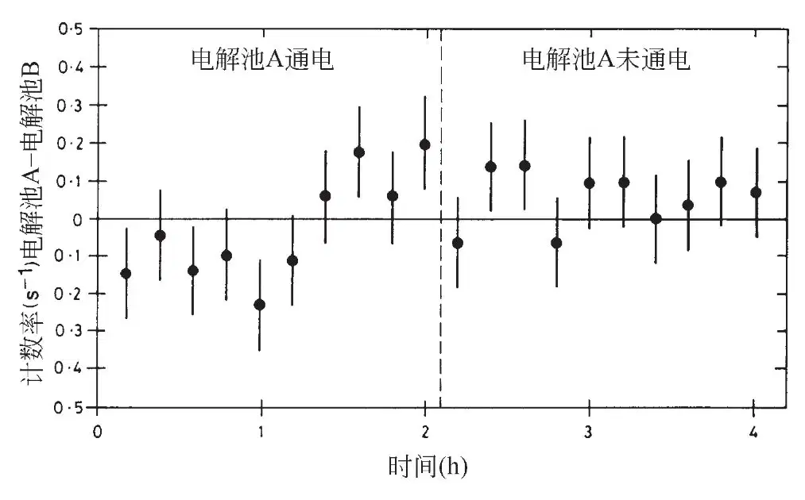
图4．电解池中子发射随时间的变化，使用熔体快淬的钯带状阴极和钯箔阳极，以两个小时为周期，轮换着打开电源使氘吸附、关上电源使之弛豫，这通过数据采集的计算机来实现：见表2的注脚l。总的运行时长为110小时，“打开”和“关闭”数据的总和如图所示。运行90小时以后，我们向溶液中添加了1 μM的Pb2+离子（通过铅的沉积使表面中毒）。有或者没有Pb2+离子的数据之间没有差异，所以将整个运行期间的数据都结合起来了。这次运行目的在于增强文中讨论的非平衡效应的表现。假设钯带具有高密度的晶界、位错和其他的晶格缺陷。因为“打开”和“关闭”的区间是钯带特征扩散时间的几倍，所以假设钯带的组成在完全充氘的条件（D/Pd≈0.83）和（α + β）相区域的限制值（D/Pd≈0.65）之间的β相区域循环。 英文
γ射线计数
由于已经表明质子–氘核冷核聚变预计进行的速率比氘核–氘核核聚变要快约8.5个数量级[3]，我们通过寻找质子–氘核核聚变产生的D(p, γ)3He5,488 keV的γ射线对氢–同位素核聚变的电解增强进行了研究。我们使用了一个113 cm3的铅防护n型高纯锗晶体γ射线谱仪，在内有轻水和重水混合物的多种冷核聚变电解池中探寻一切能量范围在0.1~7 MeV的γ射线。结果也在表2中列出，它们一致表明没有γ射线放出。如果我们假设放射在整个运行过程中得以维持的话，那么由表2中可获得的γ放射值的最低限（2σ），钯为7×10–3 γ·s–1·g–1或1×10–3 γ·s–1·cm–2，钛为1.4×10–3 γ·s–1·g–1或4×10–4 γ·s–1·cm–2。琼斯等人[2]报道核聚变的活性仅可保持4~8小时，而且始于电解开始后约1小时，在这样的条件下γ射线放射速率的标准偏差典型值约为0.05 s–1而2σ值对钛而言为4×10–3 γ·s–1·g–1或3×10–3 γ·s–1·cm–2。运行后对钯阴极的吸附物及所用的轻水和重水混合物电解液的氢同位素进行分析，给出了令人满意的氘和氢的比值，在1.5~2.5的范围内。我们注意到，如果假定的核聚变过程的增强对质子–氘核核聚变像对氘核–氘核核聚变一样有效的话，那么，因为在更轻的氘核–质子核系统中的隧道效应增强[3]，γ射线测量对冷核聚变过程实际能提供比中子测量更加严格的限值。由于金阳极上有金的溶解且在阴极上有相应的金的沉积，对从一些电解池获得的结果的解释变得较为复杂：这也影响了最初的工作[2]。 英文
氚的富集
弗莱施曼等人[1]宣称氚产生速率约为每秒104个原子，与他们报道的中子发射速率相等。他们使用了一种差分技术，这种技术是将钯阴极电解池中氚的累积与另一个铂阴极电解池中氚的累积进行比较。他们以规定的时间间隔取样分析，同时添加新的重水以保持总电解液体积不变。 英文
电解富集被广泛用于分析前增大水中氚的浓度[14]。要实现可重复的结果需要仔细控制电解，因为富集因子变化很大（参考文献15、16；奥特莱，个人交流）：改变电极材料、电极表面状态（活性）、电流密度（过电压）和温度的改变都会造成巨大的影响。如果不加注意，富集因子的变化可以超过两倍[16]。因此只有考虑这个已知的可变电解富集因素才能对弗莱施曼等人的宣称作出评估。令人惊异的是，弗莱施曼等人[1]宣称他们的铂电解池中没有电解富集。 英文
如果氢同位素的电解过程速率表述如下
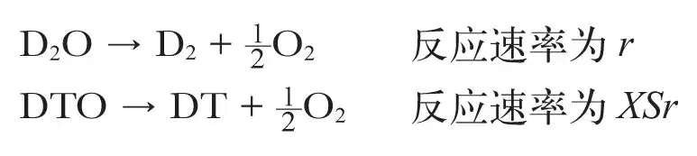
其中r代表电解反应速率，S为氚–氘分配系数，X为氚（T）在溶液中的摩尔分数，那么氚的累积可以表示为[10]
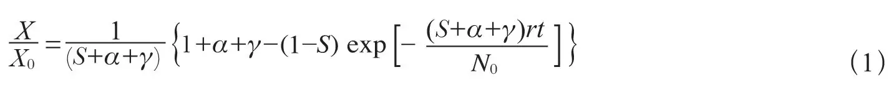
其中通过添加新的重水（包含一定量摩尔分数为X0的氚，与衰变速率成正比）保持溶液总体积不变，溶液取样速率与电解速率之比为α，γ代表溶液蒸发的速率与电解速率之比——需要进行一个小的纠正，可以假设从电解池中溢出的电解气体在水蒸气中是饱和的。在目标时间尺度上，S的变化可以给出富集情况的变化
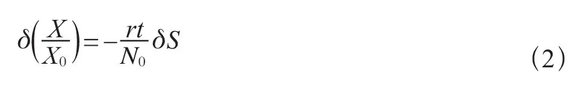
如果溶液被大气中吸附而来的氢污染了，那么如果Sobs代表由方程（1）推导的表观DT富集系数，则Sobs=S/[0.5(1+f)]，其中f=(1–XH)/(1+XH(SHD–1))，XH代表氢的摩尔分数，SHD代表HD的分配系数（HDO和D2O反应的相对速率）。因此，除了一个电极到另一个电极的固有变化之外，很显然任何吸附氢的量变化都将会表现出表观富集系数的变化：
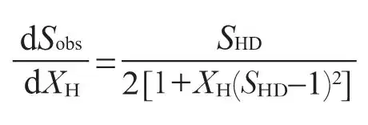
我们发现除非采取非常严格的预防措施（而且我们相信我们采用的实验步骤与参考文献1中所用的是非常相似的（弗莱施曼，个人交流）），XH≈0.07这样的值是常见的。在这些条件下，XH仅0.01的变化将会使Sobs变化0.02，鉴于所宣称的效应很小，这个变化是非常显著的。 英文
关于差分富集是否能够用来说明参考文献1的结果，任何这样的评价关键取决于X0的值，这个值未曾被报告过。使用r（1.24×1018原子/秒）和N0（14.6×1023个原子）的值[1]，我们从方程（2）计算出，如果X0处于商用D2O范围的极低端（3 Bq·ml–1），需要δS = 0.46；如果它属于中等（10~15 Bq·ml–1），需要δS≈0.1；如果它比较高（80 Bq·ml–1），δS≈0.02就足够了。 英文
方程（1）在铂和钯阴极上的适用性都经过了实验的验证，是同量热和中子计数实验联合进行的（见图5的图注），使用氚初始含量为13 kBq·ml–1的D2O（效率经过了校正）。用这个方程拟合所有给出的实验数据（图5），对钯而言，Sobs = 0.59，对于铂，Sobs = 0.61。对氢吸附量做校正，采用SHD = 6（参考文献16），得出S≈0.48，与之前的工作和理论预期一致（S = 0.46±0.02，（参考文献14、15；罗森和奥特莱，个人交流））。对于单独的电极，钯的Sobs在0.46到0.65之间变化（校正后在0.42到0.58之间），而铂的Sobs在0.56到0.85之间变化（校正后在0.43到0.69之间）——对于单独电极的总范围δSobs= 0.4，这足以对弗莱施曼等人的结果[1]给予解释。 英文
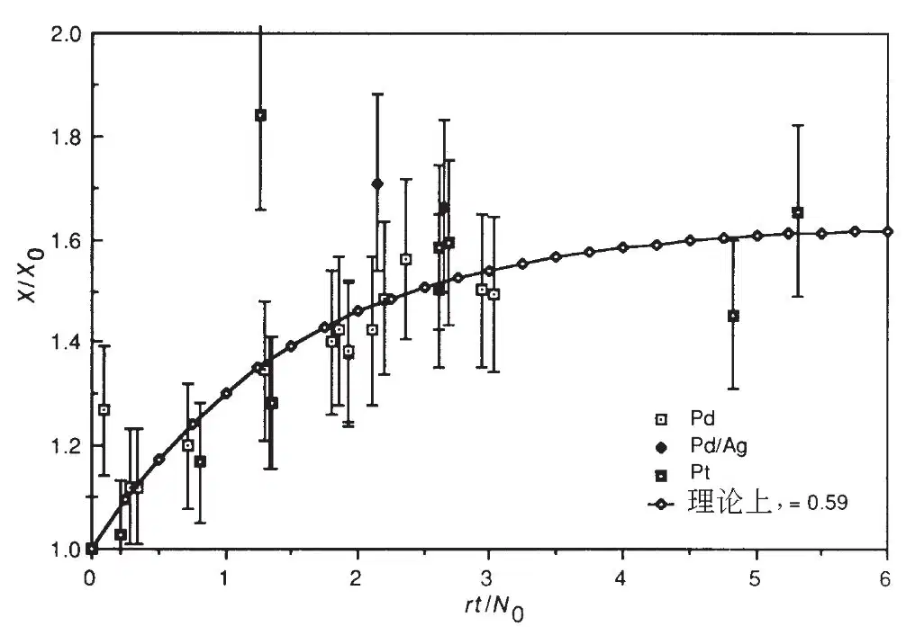
图5．一定体积的开放电解池中氚的电解富集，使用钯和铂阳极：相对计数率X/X0相对于电解量rt/N0的关系（符号在文中进行了定义）。初始的计数率（经过了效率校正）为13.0±0.6 kBq·ml–1。误差为1σ。钯电解池是FPH量热计，490~660小时后取样，表2中第一部分的电解池（脚注a~e）在运行结束的时候取样，一个电解池通过高效中子探测器取样——表2的脚注k。曲线是对方程（1）的拟合。 英文
从这些结果和讨论中可以很清楚地看到，要证明所报告的氚的累积[1]是发生核聚变的可靠的实验证据，还需要更多的证据。 英文
材料表征
使用125 μm厚的钯箔，在0.1 M的LiOH溶液中以铂为阳极、电流密度为100 mA·cm–2的条件下，充氢率（通过冷冻在液氮中样品的热萃取质谱和独立的电化学萃取获得[10]）达到H/Pd = 0.95±0.05约耗时1小时。在0.1 MLiOD中充氘率的上限更低（0.84±0.03）。在中子计数和量热实验中极化时间更长的钯棒（直径1 mm和2 mm）显示D/Pd = 0.76±0.06。对于给定的充氘率，其平衡压力要高于同样充氢率的平衡压力，这是众所周知的[17]。用中断电流的方法确定了所得到的过电压在0.8~1 V的范围内（参考文献1）。D2O从初始的99.9%，24小时内降为约98.5%，继续电解数个星期降为88%~98%（通过红外光谱进行分析）。导致钯中H/D的比值变为0.02~0.04。 英文
电解期间，所有的钯阴极都会覆盖上一层从暗无光泽到致密黑色这样外观不同的物质。在后面的实例中，也发现过疏松的黑色物质，在一些极端的情况下它会在电解进行期间掉落，结果导致阴极的严重腐蚀。该层本身清楚反映了阴极表面形态的改变。在高电流密度、高温、较小直径的棒上以及在长期频繁的阶跃式改变电流密度的条件下，容易生成厚的黑色层。该层在螺旋状阴极的外侧要比内侧更容易观察到，而且在D2O中极化过的阴极上也比在H2O中极化过的阴极上更容易观察到（这可能与相同含量情况下Pd–D体系有更高的平衡气压有关），而且在不同来源的材料上其外观也不相同。这一发现可以用已有的理论[17]给予解释：由于充氢率很高，钯中将出现微裂缝和裂缝以释放掉由此而来的机械应力，同时也有假说认为这种效应依赖于金属表面的应力状态和它的微结构。 英文
在LiOD中使用的阴极表面层含有锂，通过二次离子质谱（SIMS）分析表明锂的浓度分布已经深入金属内1 μm。SIMS图像显示锂并不是规则分布的，而是看起来像被捕获在表面层中的微裂缝里。 英文
表面分析表明有一定数目的其他元素位于表面层之上或者其中，有极少量的铂，痕量的铜、锌、铁、铅和硅：铂可能来源于阳极，而硅来自玻璃容器。毫无疑问，主要的其他污染物应该来自溶液：我们发现的数量级（按原子数计算是百分之几，限于表面层）与在浓度为10–9~10–10 M的溶液中长时间电解后的沉积物是一致的。可能有人批评，低水平的沉积物会使潜在的催化活性中毒：因此我们在一些实验中使用了电解预处理，以期减少表面的污染物。我们通过在同一溶液中重复实验，简单地改变阴极，或者事先将溶液在一个分开的电解池中进行处理。 英文
因为有报告声称有一种非同寻常的机制导致核反应进行过程中优先生成非辐射性的4He，我们用真空熔融/质谱仪对四个阴极（表2中的前4组）进行了分析。由于钯在熔点处的高蒸气压导致实验发生困难，所以内部标样是用离子注入法向阴极上切下的样品注入1013和1015个4He原子而得到的。这种确定3He和4He的方法的检测限约为每份样品8×1010个原子，即每克（1~10）×1011个原子。我们没有发现3He和4He。如果核聚变以参考文献1中所报告的速率发生，预期的测量值应约为每克1016个原子。 英文
众所周知[13]，氢在钛阴极上析出得到的是一个致密的网状氢化物沉淀，该氢化物可以采用标准的金相学方法进行观察，它会渗入到表面以下。在0.1 MD2SO4电解液中，100 mA·cm–2的电流密度下，网状物1小时渗入约30 μm。贵金属的沉积会阻止电解液的吸附，这可能是通过降低过电压和促进气体产生造成的。琼斯等人[2]采用的在“啤酒”（译者注：此处有调侃琼斯等人使用的多种盐混合物溶液的意思）中电解得到的氢化物沉淀局限于颗粒边界；其他实验表明电解液中PdCl2的存在会导致这一效应，可能是钯在阴极电镀的结果。很清楚的是，假设含有化合物TiD2阴极的核聚变速率表达式完全是误导人的：金相学表明成对氘的数目非常少，因此，所声称的每个氘对的核聚变速率远高于给出的数值，所以相比之前的解释[2]，这一结果更难与预期的相符。 英文
讨论
对冷核聚变的兴趣催生了大量中子计数实验。众所周知，通常情况下，由于不可预期的系统变化，在不同的时间和位置对信号+本底和本底的计数测量（如参考文献1所为）是不可取的。对于低计数率实验尤为如此。对本底速率变化的补偿和选定过程的误差评估都很成问题。琼斯等人的工作[2]存在这些错误[18]，是应该被批评的。在参考文献2中需要注意的是，十四次实验只有一次显示出明显的效应，而且仅仅是因为给这一次特殊的实验赋予了比其他实验小的计数误差。这篇文章中我们试图用滑梭的办法来减小本底和计数器的变化以及误差计算的不确定性。对一些更加惊人的声称进行思考时，我们注意到，因为人所共知的10BF3和3He正比计数器对湿度的敏感性，以及计数器放大器系统对接地回路的敏感性，因此更加的谨慎是明智的。在我们的研究中，中子计数器被分成几部分，而且从不同部分得来的信号之间的关系是已知的，所以不同部分给出不一致的信号而产生的假信息是可以分辨出来的。 英文
重现这些效应之所以失败，是由于严格除氢的需要造成的，已经有结论指出钯电极在使用前必须经过铸造并小心地除气，以除去所有痕量的碳和杂质氢（译者注：氢在此被看作杂质是相对于氘而言），它们可能存在于位错点或者其他的一些高能位点上（参考文献19；哈金斯在1989年5月圣菲举行的冷核聚变专题讨论会上的报告）：然而这与该效应“核聚变”起源的假定不符，因为在低能量范围，质子–氘核核聚变明显快于氘核–氘核核聚变[3]。而且，最初的报告[1,2]除了小心盖好电解池以外，并没有指出任何特殊预防措施以排除空气中的水蒸气。我们沿用类似的步骤，发现重水与空气中的水汽交换而退化的现象迅速发生。另外，有人指出在相当的一段时期内维持一个高的电流密度是必需的（见阿普尔比在1989年5月圣菲举行的冷核聚变专题研讨会上的报告），尽管我们并不完全清楚后面的这个结论是对参考文献1所报道现象的重现还是有所不同。在我们的中子计数实验中，新形成的位错是通过塑性形变产生的，一些计数实验是在高达1 A·cm–2的电流密度下进行的（表2），在使用等温量热计的一个实验中，其高电流密度保持了相当长的一段时间（表1）。痕量的铂在阴极上沉积，假设这会导致氘析出的过电压降低，从而降低阴极中氘可达到的浓度水平，也被认为是对不可重复性的一种解释（弗莱施曼，个人交流）。当我们在我们的中子计数实验中使用钯阳极时，并没有观测到任何效应。 英文
充氢和充氘的时间与预期的扩散时间一致（x2/D，其中扩散系数D = 10–7 cm2·s–1，x为样品的半径或其厚度的一半）[10]，并且核计数和量热实验进行的时间也总是远大于这一时间尺度。此外，在钯的电解充氘（氢）过程中，显然会有一个浓度梯度，一个移动的相边界，并且金属外表面的原子层会被氘所饱和[17]（也可能过饱和）。因此，可以预期，足够灵敏的设备可以在这种材料完全充氘以前检测到核聚变过程。因为我们的中子探测实验的灵敏度是弗莱施曼等人[1]的约105~106倍，看上去似乎不太可能发生任何伴随着钯充氘的大大增强的核聚变并产生中子发射。当然，我们注意到总是有可能构建一个实质上尚难检验的理论，该理论涉及金属或其表面假定的特殊情况。因此，仔细表征具有正结果的材料是非常重要的。 英文
氘核–氘核反应的中子分支会被完全抑制掉而代之以（t+p）分支，这一观点已得到一些论证，进一步的论证指出（庞斯，个人交流）在电极内部作为核过程产物的氚并不一定与电解液发生交换，因而也就可能检测不到。然而，这样一个核过程的其他的产物——高能质子在与晶格相互作用的时候应该能被检测到，产物中还应包括中子发射：我们估计，已知质子损失能量的速率，通过与相邻元素（p, n）反应截面的比较，产率约为每质子10–6个中子，如果核聚变以参考文献1中所报道的速率完全通过（t+p）分支进行的话，我们的计数实验可以产生的中子产率为104 s–1。 英文
由于在PdD和TiD2中都存在相对较大的氘核–氘核间距，可能有争论说核聚变需要一些晶格中的非平衡状态——也许在钯的α/β相边界，或者在生长中的TiD2针状物的尖端，又或者在一个晶格缺陷上，在这些地方，也许氘核–氘核或者质子–氘核的间距会大大减小。本文中，我们通过脉冲电流创造了一个非平衡的状态，但是仍没有检测到中子发射（图4）。 英文
一些对产生表观“过热”现象的解释强调的是在具有催化性的金属表面的复合[20]：然而除了偶尔的突然爆发，它不会导致任何可观测的中子发射，通过比较为了维持电解池的体积而加入的水的体积与通过电解池的电荷数量，我们发现，这并不是一个重要的效应（与其他研究者的结论一致[9]）。在液体上方的气体空间复合，不是发生在暴露的阴极表面，就是被从阴极上腐蚀下来的胶体金属颗粒所催化，但是，这仅能解释最近报道的所观察到放热实验中的一些现象（见弗莱施曼和庞斯在1989年5月于洛杉矶举行的电化学会议上的报告）。在讨论参考文献1的结论时，我们倾向于关注“简易的”弗莱施曼、庞斯和霍金斯（FPH）量热计的特征，因为我们只观测到了一些小的效应（在固有的不确定性的水平上），在一种标定很困难的量热计（FPH型）上，这些效应可能被错误地认为是来源于冷核聚变。使用同样的电极和电解液材料并利用没有这些问题的量热计，发现这样的电解池并未显示出这些效应。 英文
有两点关于标定的问题可能对于FPH型量热计所获得的表观结果产生重大的影响：首先是标定何时进行，其次是标定如何进行。关于第一点，从我们和刘易斯等人[8]的工作来看，似乎在电解进行的前10,000分钟进行的标定是非常错误的，这将会导致错误的结论，即把处在平衡态的电解池误认作处在放热状态。关于第二点，弗莱施曼等人[1]对使用内部的电阻加热器、通过测量牛顿冷却定律的损失来进行标定的方法进行了描述。通常情况下，这一过程包括了在电解出现时给加热器施加功率，紧接着跟踪温度–时间轨迹，直到达到稳定状态，然后把加热器关掉，记录冷却曲线。这个过程可以算出工作温度下一个电解池的微分量热计常数的估计值，kd = d(ΔP) / d(ΔT)（其中P为功率，T为温度），有两方面的因素会造成这个值的误差变大。首先，因为任何的标定程序都需要5~10小时，要得到参考液面处的正确数值，需要进行外推：这估计会对结果造成20%或更大的误差。此外，因为电解池的蒸发量会随着温度的升高而明显增大，随着温度的升高，基线斜率也会增大，这种错误所产生的效应相应的会更加明显：声称的效应实际上在电解池以最高的输入功率运行时是最大的。第二，这种量热计是非线性的（方程（3），图2的图注），当温度梯度较大时，非线性效应比较明显：它们不能用简单的牛顿冷却定律来描述。如果一个微分量热计常数通过输入功率来导出，计算出的输出功率应该为（来自图2的图注中的，方程（3））
Papp = kdΔT= (ksb,0 + kc) ΔT+ 3(ksb,0/T0) (ΔT)2
与正确的输出功率（方程（3））进行比较，则有
Papp – P = 3ksb,0(ΔT)2/2T0
如果与电解功率相比，施加在加热器上的功率很大，那么这个误差会更大。从参考文献1给出的数据进行反演计算表明，声称的效应在焦耳输入功率为6 W的数量级时最大。对我们的FPH型量热计而言，这将得出ΔT≈50~60 ℃。因此，如果这些电解池经过这种方法进行标定，将能观察到0.8~1 W量级的表观过热。我们的标定方法（见图1的图注）显著地减小了这种来源的误差。最原始的报告[1]实质上很明显是初步的，而且从上面的证据来看，在没有详细描述所采用的实验步骤和用于抵消使用一个简单量热计带来的系统误差的方法之前，最初的报告[1]中的宣称是难以评估的。 英文
在仔细控制、很好理解实验条件并使用完备表征材料的条件下，我们认为我们的工作为电解池中尚未观察到冷核聚变建立了清晰的界限。更进一步的细节参见参考文献10。现在对观察到冷核聚变的声明应该符合类似的数据分析和材料表征标准，这样才能对其作出适当的评估。 英文
（李琦 翻译；李兴中 审稿）